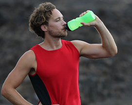

Diet is everything
In many ways, the human body is akin to an engine. Do you put poor quality fuel in a car and expect 50 miles per gallon? Of course not. Your body is the same way, if you want to feel and perform your best then you must eat healthily. Vegetables, fruits, carbs, and water should be your foundation. You need plenty of each every day if you want to run your best. You also should minimize you intake of stuff like sugars and fatty foods. Theses will only make you lethargic and slow you down.
Warmup and Cool down

When going on a run, don't just put on your shoes and go. You must get your body prepared to exercise beforehand, otherwise you will run slower as well as risking injury. Before you start your run, go through a circuit of stretches that work your whole body. Then, run a short (~0.5 mile) warmup to get your blood pumping. After your run make sure to stretch again to help remove lactic acid from your system.
Know when to stop
While it might seem counterproductive, sometimes not running is the best thing that you can do to run faster. Running especially for beginners, can cause a variety of unpleasant side effects such as soreness, blisters, and aching joints. Taking a break from running allows these to go away quicker, letting you get back on the road, while feeling better for it.